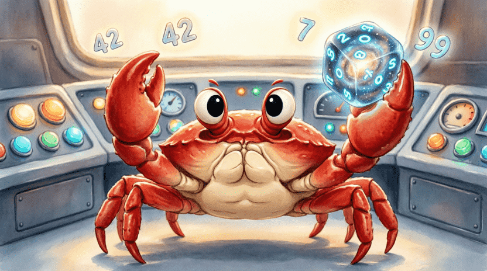
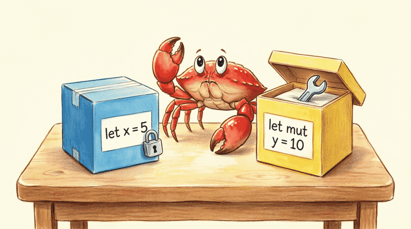
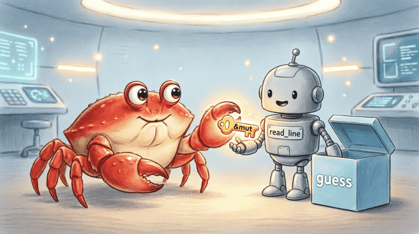
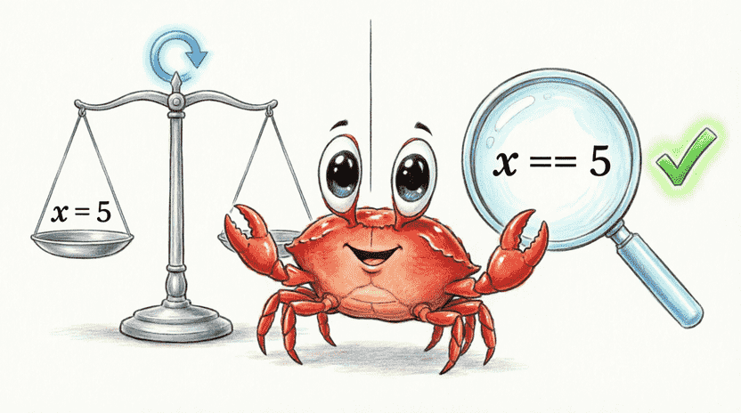

سرزمین راست: ماجراهای فریس خرچنگ فضایی
فصل ۲: بازی فکری «عدد گمشده» (متغیرها، ورودی و شرط)
📑 فهرست فصل
۲.۱. معما: کامپیوتر یک ستاره قایم کرده
۲.۱.۱. داستان: فریس و ستاره گمشده
۲.۱.۲. عدد تصادفی مثل تاس انداختن
۲.۱.۳. اضافه کردن کتابخانه rand
۲.۱.۴. آوردن جعبه تاس به پروژه
۲.۲. جعبههای حافظه (متغیرها)
۲.۲.۱. ساختن جعبه با let
۲.۲.۲. تغییرناپذیری پیشفرض (چرا جعبه قفل است؟)
۲.۲.۳. جعبه قابل تغییر با mut
۲.۲.۴. دوست صمیمی ما: خطاهای کامپایلر
۲.۳. گوش دادن به حرفهای ما (دریافت ورودی)
۲.۳.۱. طلسم خواندن از صفحه کلید
۲.۳.۲. تکهتکه کردن طلسم
۲.۳.۳. چرا &mut guess؟ (کلید جعبه را به کسی بدهیم)
۲.۴. تبدیل نوع (از String به عدد)
۲.۴.۱. مشکل: متن در برابر عدد
۲.۴.۲. پاک کردن فاصلهها و خطوط اضافه با trim()
۲.۴.۳. تبدیل متن به عدد با parse()
۲.۴.۴. سایهاندازی (Shadowing): اسم قدیمی، کار جدید
۲.۵. اگر نه، پس چی؟ (if/else)
۲.۵.۱. مقایسه حدس با راز
۲.۵.۲. نوشتن if/else if/else
۲.۵.۳. عملگرهای مقایسه با مثال روزمره
۲.۵.۴. چرا = و == فرق دارند؟ (مساوی در برابر مقداردهی)
۲.۶. حلقهی تکرار (loop)
۲.۶.۱. مشکل: بازی فقط یک بار حدس میزند
۲.۶.۲. معرفی loop (حلقه بیپایان)
۲.۶.۳. قرار دادن کد حدس داخل loop
۲.۶.۴. شرط خروج با break
۲.۶.۵. اضافه کردن شمارنده حدسها
۲.۷. مدیریت خطاهای ساده (بدون ترسیدن برنامه)
۲.۷.۱. اگر کاربر به جای عدد حرف بزند
۲.۷.۲. معرفی match برای نجات برنامه
۲.۷.۳. توضیح ساده: «اگه نشد، دوباره بپرس»
۲.۸. جمعبندی و تمرین
۲.۸.۱. مرور مفاهیم
۲.۸.۲. چالش بزرگ: نزدیکشدن به هدف
۲.۱. معما: کامپیوتر یک ستاره قایم کرده
۲.۱.۱. داستان: فریس و ستاره گمشده
فریس توی سفرهای فضاییاش یک ستارهی درخشان پیدا کرده که میتونه یک آرزو رو برآورده کنه. ولی این خرچنگ بازیگوش، ستاره رو توی یکی از کمدهای مخفی سفینه قایم کرده!
فریس با چشماش بهت نگاه میکنه و میگه:
🦀 «من یک عدد بین ۱ تا ۱۰۰ انتخاب کردم. اگه با کمترین حدس پیداش کنی، ستاره مال توئه! هر بار یک عدد بگو، من بهت میگم برو بالا یا بیا پایین.»
این دقیقاً بازی معروف «حدس عدد» هست. ما قراره همین بازی رو با Rust بنویسیم تا بتونیم با کامپیوتر مسابقه بدیم – و در همین حین ببینیم کامپیوتر چطور اعداد را به خاطر میسپارد، چه چیزی مینویسیم و چطور تصمیم میگیرد. این یعنی قدم بزرگی به سمت جادوگر کامپیوتر شدن! ✨
۲.۱.۲. عدد تصادفی مثل تاس انداختن
کامپیوترها ذاتاً منطقیان و نمیتونن واقعاً «شانسی» تصمیم بگیرن. ولی ما میتونیم از یک فرمول ریاضی استفاده کنیم که انگار داره تاس میاندازه! به این اعداد میگن شبهتصادفی.
توی Rust، مهندسا یک جعبهابزار آماده به اسم rand ساختن که دقیقاً همین کار رو برامون انجام میده. ما فقط باید اون رو به پروژهمون اضافه کنیم.

۲.۱.۳. اضافه کردن کتابخانه rand
اول ترمینال رو باز کن و یک پروژهی جدید بساز:
cargo new guess_the_number
cd guess_the_number
حالا باید به cargo بگیم که به جعبهابزار rand نیاز داریم. فایل Cargo.toml رو باز کن و توی بخش [dependencies] این خط رو اضافه کن:
[dependencies]
rand = "0.8.5"
فایل کامل باید شبیه این بشه:
[package]
name = "guess_the_number"
version = "0.1.0"
edition = "2021"
[dependencies]
rand = "0.8.5"
0.8.5 یعنی ما نسخهی خاصی رو میخوایم. دفعهی بعد که cargo run بزنی، کارگو خودش اون رو از اینترنت دانلود میکنه. (مطمئن شو که به اینترنت وصلی!)
۲.۱.۴. آوردن جعبه تاس به پروژه
حالا که کتابخانه رو معرفی کردیم، باید به برنامه بگیم از کدوم قسمتش استفاده کنیم. بالای فایل src/main.rs (بعد از خط use std::io;) این خط رو بنویس:
#![allow(unused)]
fn main() {
use rand::Rng;
}بعد توی تابع main، عدد مخفی رو اینطوری میسازیم:
#![allow(unused)]
fn main() {
let secret_number = rand::thread_rng().gen_range(1..=100);
}بیا این طلسم رو تکهتکه کنیم:
🔹 rand::thread_rng() → یک دستگاه تاسانداز مخصوص برای برنامهی ما میسازه.
🔹 .gen_range(1..=100) → میگه یک عدد بین ۱ و ۱۰۰ انتخاب کن. (..= یعنی خود ۱ و ۱۰۰ هم جزو محدودهان.)
💡 تست اولیه: فعلاً برای اینکه ببینیم کار میکنه، عدد رو چاپ میکنیم (بعداً پاکش میکنیم تا بازی واقعی بشه):
#![allow(unused)]
fn main() {
println!("عدد مخفی (فقط برای تست): {}", secret_number);
}👨👩👧 نکته برای والدین و مربیان
این فصل مفاهیم متغیر، ورودی کاربر، تبدیل نوع، حلقه و مدیریت خطای ساده را معرفی میکند. بازیکن یک بازی کامل تعاملی خواهد ساخت. اگر کودک در درکmatchوcontinueمشکل داشت، نگران نباشید – حتی بزرگسالان هم برای تسلط بر این مفاهیم زمان نیاز دارند. کتاب رسمی Rust این مباحث را با جزئیات بیشتر پوشش میدهد:
doc.rust-lang.org/book/ch02-00-guessing-game-tutorial.html
۲.۲. جعبههای حافظه (متغیرها)
توی برنامهنویسی، برای اینکه چیزی رو یادمون بمونه، از متغیر استفاده میکنیم. متغیر مثل یک جعبهی کوچک توی مغز کامپیوتره که یک عدد یا متن رو توش نگه میداره.
۲.۲.۱. ساختن جعبه با let
توی Rust، با کلمهی let جعبه میسازیم:
#![allow(unused)]
fn main() {
let x = 5;
}یعنی: «یک جعبه به اسم x بساز و عدد ۵ رو توش بذار.»
توی بازی ما، secret_number قبلاً ساخته شد. ولی برای جواب کاربر هم یک جعبه نیاز داریم:
#![allow(unused)]
fn main() {
let mut guess = String::new();
}String::new() یک جعبهی خالی از نوع متن میسازه. (String یعنی متنی که میتونه هر طولی داشته باشه.)
۲.۲.۲. تغییرناپذیری پیشفرض (چرا جعبه قفل است؟)
یک ویژگی فوقالعادهی Rust اینه: وقتی جعبه میسازی، تا وقتی خودت نخواهی، محتویاتش عوض نمیشه. به این میگن تغییرناپذیری.
مثال:
#![allow(unused)]
fn main() {
let x = 5;
x = 6; // خطا! نمیشه x رو عوض کرد.
}کامپایلر سریع میگه:
error[E0384]: cannot assign twice to immutable variable `x`
این مثل قفل قلکه! تا کلید mut رو ندی، کسی نمیتونه توش چیزی بذاره. این کار جلوی اشتباهات ناخواسته رو میگیره.
۲.۲.۳. جعبه قابل تغییر با mut
ولی گاهی لازمه جعبه رو باز کنیم تا مقدار جدید بریزیم توش. برای این موقع ساختن جعبه، کلمهی mut (مخفف mutable) رو اضافه میکنیم:
#![allow(unused)]
fn main() {
let mut y = 10;
y = 20; // حالا دیگه اشکالی نداره!
}توی بازی ما، guess باید بتونه جوابهای مختلف کاربر رو ذخیره کنه، پس حتماً با let mut میسازیمش.

۲.۲.۴. دوست صمیمی ما: خطاهای کامپایلر
اگر توی Rust خطا گرفتی، اصلاً نترس! کامپایلر Rust مثل یک معلم مهربونه که دقیقاً نشون میده کجا اشتباه کردی و حتی راه حل پیشنهاد میده. مثلاً اگر mut رو فراموش کنی، میگه:
#![allow(unused)]
fn main() {
help: consider making this binding mutable: `mut guess`
}یادت باشه: خطا دشمن نیست، راهنماست! 🤝
۲.۳. گوش دادن به حرفهای ما (دریافت ورودی)
حالا باید از کاربر بخواهیم عددش رو تایپ کنه و ما اون رو بخونیم.
۲.۳.۱. طلسم خواندن از صفحه کلید
اول بالای فایل، کتابخانهی ورودی/خروجی رو اضافه میکنیم:
#![allow(unused)]
fn main() {
use std::io;
}(اگر قبلاً در تست اولیه use rand::Rng; را اضافه کردهای، حالا دو تا use داری.)
بعد توی main مینویسیم:
#![allow(unused)]
fn main() {
io::stdin().read_line(&mut guess).expect("خطا در خواندن ورودی");
}۲.۳.۲. تکهتکه کردن طلسم
این خط شاید ترسناک به نظر بیاد، ولی بذار با هم بازش کنیم:
🔹 io::stdin() → «گوشی تلفن رو بردار و به صفحهکلید وصل شو.»
🔹 .read_line(&mut guess) → «منتظر بمون کاربر چیزی بنویسه و Enter بزنه. هرچی نوشت رو بریز توی جعبهی guess.»
🔹 .expect("خطا در خواندن ورودی") → «اگر به هر دلیلی ارتباط قطع شد، این پیام رو نشون بده و برنامه رو متوقف کن.»
۲.۳.۳. چرا &mut guess؟ (کلید جعبه را به کسی بدهیم)
علامت &mut یعنی کلید موقت. تابع read_line میخواد چیزی رو داخل guess بنویسه. ما بهش اجازه میدیم این کار رو بکنه، ولی مالکیت جعبه رو بهش نمیدیم. فعلاً همینقدر بدون که &mut یعنی: «اجازه داری محتوای این جعبه رو عوض کنی.» (فصل ۴ دربارهی این اجازهها مفصل حرف میزنیم!)

۲.۴. تبدیل نوع (از String به عدد)
۲.۴.۱. مشکل: متن در برابر عدد
وقتی کاربر 42 رو تایپ میکنه، کامپیوتر اون رو مثل یک متن "42" میبینه. ولی secret_number یک عدد واقعیه. ما نمیتونیم سیب رو با پرتقال مقایسه کنیم! پس باید متن رو به عدد تبدیل کنیم.
۲.۴.۲. پاک کردن فاصلهها و خطوط اضافه با trim()
وقتی کاربر عدد میزنه و Enter میکنه، ته متن یک کاراکتر پنهان \n (یعنی خط جدید) اضافه میشه. تابع trim() این آشغالهای اضافی رو پاک میکنه:
#![allow(unused)]
fn main() {
let clean_guess = guess.trim();
}۲.۴.۳. تبدیل متن به عدد با parse()
حالا متن تمیزه. با parse() میتونیم بگیم «لطفاً اینو به عدد تبدیل کن»:
#![allow(unused)]
fn main() {
let guess: u32 = guess.trim().parse().expect("لطفاً یک عدد معتبر وارد کن!");
}🔹 parse() → تلاش میکنه متن رو به عدد تبدیل کنه.
🔹 : u32 → به کامپایلر میگه «میخوام یک عدد صحیح مثبت (تا حدود ۴ میلیارد) باشه.»
🔹 expect() → اگر تبدیل نشد، برنامه رو با پیام ما متوقف میکنه. (بعداً یاد میگیریم چطور بدون توقف مدیریتش کنیم.)
۲.۴.۴. سایهاندازی (Shadowing): اسم قدیمی، کار جدید
دقت کردی دوباره از let guess استفاده کردیم؟ توی Rust این کار مجازه و بهش میگن سایهاندازی. یعنی متغیر قبلی که String بود کنار میره، و یک متغیر جدید با همان اسم ولی از نوع u32 جایگزینش میشه. خیلی کاربردیه چون لازم نیست اسمهای طولانی مثل guess_number اختراع کنیم!
۲.۵. اگر نه، پس چی؟ (if/else)
۲.۵.۱. مقایسه حدس با راز
منطق بازی سادهست:
🔸 اگر حدس < عدد مخفی → بگو «برو بالا!»
🔸 اگر حدس > عدد مخفی → بگو «بیا پایین!»
🔸 اگر حدس == عدد مخفی → بگو «برنده شدی!»
۲.۵.۲. نوشتن if / else if / else
#![allow(unused)]
fn main() {
if guess < secret_number {
println!("❄️ یخ زدم! برو بالا!");
} else if guess > secret_number {
println!("🔥 داغ داغه! بیا پایین!");
} else {
println!("🏆 بردی! ستاره مال توست!");
}
}۲.۵.۳. عملگرهای مقایسه با مثال روزمره
| عملگر | معنی | مثال واقعی |
|---|---|---|
< | کوچکتر از | سن من < سن پدرم |
> | بزرگتر از | قد پدرم > قد من |
== | مساوی با | 2 + 2 == 4 |
!= | نامساوی با | 3 != 4 |
<= | کوچکتر یا مساوی | انگشتان دست <= 10 |
>= | بزرگتر یا مساوی | نمره قبولی >= 10 |
۲.۵.۴. چرا = و == فرق دارند؟
🔹 = یعنی مقداردهی: «سمت راست رو بریز توی جعبهی سمت چپ.» (let x = 5;)
🔹 == یعنی مقایسه: «آیا سمت راست و چپ برابرند؟» (if x == 5)
اگر اشتباهی توی if از = استفاده کنی، کامپایلر سریع خطا میده چون دنبال یک سؤال (شرط) بوده، نه یک دستور!

۲.۶. حلقهی تکرار (loop)
۲.۶.۱. مشکل: بازی فقط یک بار حدس میزند
تا اینجا برنامه یک بار عدد میگیره و تموم میشه. ولی ما میخوایم تا وقتی کاربر درست حدس نزده، بازی ادامه پیدا کنه.
۲.۶.۲. معرفی loop (حلقه بیپایان)
loop یک دایرهی تکراره. هرچی داخل { } بنویسی، تا ابد تکرار میشه، مگر اینکه دکمهی خروج رو بزنی:
#![allow(unused)]
fn main() {
loop {
println!("این جمله تا ابد چاپ میشه!");
}
}(برای متوقف کردنش باید Ctrl+C بزنی! ولی ما بعداً با break ازش بیرون میپریم.)
۲.۶.۳. قرار دادن کد حدس داخل loop
تمام بخشهای «دریافت حدس» و «بررسی» رو میذاریم داخل loop. هر دور، یک حدس جدید میگیره.
۲.۶.۴. شرط خروج با break
برای فرار از حلقه، از break استفاده میکنیم. وقتی حدس درست بود:
#![allow(unused)]
fn main() {
if guess == secret_number {
println!("🏆 بردی! ستاره مال توست!");
break; // دکمه خروج از حلقه
}
}۲.۶.۵. اضافه کردن شمارنده حدسها
بیا تعداد تلاشها رو بشماریم:
#![allow(unused)]
fn main() {
let mut count = 0;
loop {
count += 1; // یعنی: count = count + 1
// ... بقیه کد
}
}count += 1 سریعترین راه برای اضافه کردن یکدونهست!
🧠 گاهی بعضی چیزها سخت است، و این اشکالی ندارد!
حلقهها و فرار از آنها باbreakممکن است در ابتدا کمی گیجکننده به نظر برسند. حتی برنامهنویسان حرفهای هم گاهی حلقههایشان اشتباه میشود. اگر یکباره همه چیز را نفهمیدی، نگران نباش – با کمی تمرین حتماً مسلط میشوی.
![[Illustration: Ferris running on a circular track labeled “loop”. He holds a counter flag showing “1, 2, 3…”. At one point, a red gate labeled “break” opens. Style: dynamic, cartoon motion lines, encouraging mood, 16:9.]](assets/images/2.5.png)
۲.۷. مدیریت خطاهای ساده (بدون ترسیدن برنامه)
۲.۷.۱. اگر کاربر به جای عدد حرف بزند
تا الان اگر کاربر بنویسه «سلام»، برنامه با expect میترکه و بسته میشه. این تجربهی خوبی نیست. بهتره بگیم «لطفاً عدد بزن!» و دوباره بپرسیم.
۲.۷.۲. معرفی match برای نجات برنامه
به جای expect، از match استفاده میکنیم. match مثل یک دستگاه دستهبندیه: اگر تبدیل موفق شد، عدد رو بده؛ اگر نه، یک پیام دوستانه نشان بده و برو دور بعدی:
#![allow(unused)]
fn main() {
let guess: u32 = match guess.trim().parse() {
Ok(num) => num,
Err(_) => {
println!("❌ لطفاً فقط عدد وارد کن! ❌");
continue;
}
};
}🔹 Ok(num) → اگر موفق شد، عدد رو در num بذار و به guess بده.
🔹 Err(_) → اگر هر خطایی پیش آمد، دستورات داخل بلوک رو اجرا کن.
🔹 continue → یعنی «این دور رو رها کن و برگرد اول حلقه».
۲.۷.۳. توضیح ساده: «اگر نشد، دوباره بپرس»
به زبان ساده: «سعی کن متن رو به عدد تبدیل کنی. اگر تونستی، عالی! ادامه بده. اگر نتونستی، یک پیام مودبانه نشان بده و بدون اینکه برنامه بسته بشه، دوباره از کاربر بپرس.» اینطوری بازی هیچوقت قفل نمیکنه! 🛡️
![[Illustration: Cartoon sorting machine labeled “match”. Left chute: text “abc” goes in, comes out as “❌ Try again!”. Right chute: text “42” goes in, comes out as a golden number “42 ✅”. Ferris operates the machine with a friendly smile. Style: playful, technical metaphor, children’s book, 16:9.]](assets/images/2.6.png)
۲.۸. جمعبندی و تمرین
۲.۸.۱. مرور مفاهیم
تو این فصل یاد گرفتی:
✅ چطور با rand عدد تصادفی بسازی.
✅ چطور با let و let mut جعبههای حافظه بسازی.
✅ چطور با stdin().read_line() از کاربر ورودی بگیری.
✅ چطور با trim() و parse() متن رو به عدد تبدیل کنی.
✅ چطور با if/else تصمیم بگیری.
✅ چطور با loop و break حلقه بسازی.
✅ چطور با match خطاها رو مدیریت کنی بدون اینکه برنامه بترکه.
۲.۸.۲. چالش بزرگ: نزدیکشدن به هدف
حالا یک قابلیت حرفهای به بازی اضافه کن: وقتی کاربر عددی رو حدس میزنه که فاصلهاش با عدد مخفی کمتر از ۵ تا باشه، پیام بده: «🔥 خیلی نزدیک شدی! 🔥»
💡 راهنمایی: فاصله رو حساب کن. میتونی از as i32 برای تبدیل به عدد علامتدار و abs() برای قدر مطلق استفاده کنی:
#![allow(unused)]
fn main() {
let diff = (guess as i32 - secret_number as i32).abs();
if diff < 5 && guess != secret_number {
println!("🔥 خیلی نزدیک شدی! 🔥");
}
}🎮 کد نهایی بازی (کامل و آماده اجرا)
use std::io;
use rand::Rng;
fn main() {
println!("🎲 به بازی حدس عدد خوش آمدید! 🎲");
let secret_number = rand::thread_rng().gen_range(1..=100);
let mut count = 0;
loop {
count += 1;
println!("لطفاً یک عدد بین ۱ تا ۱۰۰ حدس بزنید:");
let mut guess = String::new();
io::stdin()
.read_line(&mut guess)
.expect("خطا در خواندن ورودی");
let guess: u32 = match guess.trim().parse() {
Ok(num) => num,
Err(_) => {
println!("❌ لطفاً فقط عدد وارد کنید! ❌");
continue;
}
};
if guess < secret_number {
println!("⬆️ یخ زدم! برو بالا!");
} else if guess > secret_number {
println!("⬇️ داغ داغه! بیا پایین!");
} else {
println!("🏆 بردی! ستاره مال توست! 🏆");
println!("✨ تو در {} تا حدس بردی! ✨", count);
break;
}
}
}حالا برنامه رو با cargo run اجرا کن و با دوستات مسابقه بده!
در فصل بعد یاد میگیریم چطور کدهای تکراری رو داخل توابع بستهبندی کنیم تا برنامههامون تمیزتر، کوتاهتر و حرفهایتر بشن. 🚀
![[Illustration: Ferris wearing a graduation cap, holding a glowing “Chapter 2 Master” badge. Floating around him are dice, a loop track, a match sorting machine, and a star trophy. Encouraging, bright lighting, children’s book style.]](assets/images/2.7.png)